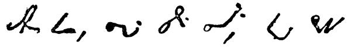
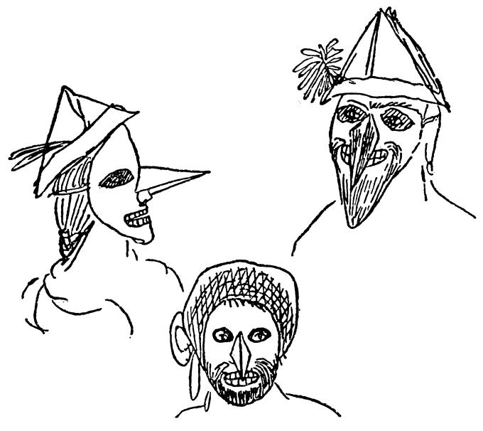

你也会收到我今天写的一封信，只是不长，这样我就能把要寄给你的喜剧写完。这些先生们吃了满满六盘杏仁饼干，这是千真万确的。信不信由你，那是供六百人吃的。
你得了荨麻疹，这是活该。你的手指总是发痒，你总想做点什么蠢事；现在，你有东西可以抓痒了。你是而且以后一直是一部陈旧的梳棉机。
我还劝你不要在信中留下空白页，因为我会在那上面画漫画，免得荒疏绘画。

DiosFN1，我亲爱的玛丽亚，你的哥哥
这些草体字叫作速记。
起居室。母亲坐在桌旁给埃米尔FN2、海德维希FN3上课。玛丽亚坐在壁炉旁看书；鲁道夫FN4在房间里跑来跑去，逗引大家。
母亲 玛丽亚，别看了。这不是你看的书。你读那么多东西，对你毫无好处。
玛丽亚 哦，妈妈，还有一个故事，看完就把书给你！
埃米尔 妈妈，“Kewatroze”这个字是什么意思呀？
母亲 噢，这个字读quatorze，十四，你早就学过了。可不能老是把一切又忘了。——海德维希！瞧这孩子，总是缠着玛丽亚，跟鲁道夫打架。海德维希！你要不要好好做点事？你们今天都乱了套啦！
（安娜FN5和劳拉·坎佩曼上。）
安娜 妈妈，你看，我们该做的事都做完了。我们现在就上楼化装，这就是我们要做的事。
母亲 好吧，可是别吵闹。
海德维希 妈妈，这道题我不会做。
母亲 那就再想想！我已经跟你计算过一次了。不要这样心不在焉的！
海德维希（哭） 我不会做嘛！
安娜 妈妈，你也化装吗？
母亲 你说什么？走开，让我安静安静。整天妈妈这个，妈妈那个，真叫人受不了。
安娜 妈妈，你说呀，你化装吗？
母亲 化装，化装，快走开！
（安娜和劳拉兴高采烈地嚷着下。）
玛丽亚 妈妈，书给你吧，这个故事我已经看完了。我也想化装，你说，我穿什么衣服好？
母亲 你瞧，我刚对安娜说过，叫她安静点，这会儿你又来了！
鲁道夫（跌倒在地） 哦，妈妈，呜——，妈妈！（叫喊）
母亲 你怎么啦！（向他走去）
埃米尔 妈妈，这句话什么意思？
海德维希 妈妈，这里有个数字真奇怪。
母亲 你们到底能不能安静点？一个接着一个，我真受不了！
埃米尔 妈妈，你说呀，能帮我一下吧！哦，妈妈，妈妈，我要上厕所。
母亲 那去吧。
玛丽亚 妈妈，你真的要化装吗？
母亲 别胡扯了！鲁道夫，你还疼吗？
海德维希 嗯，妈妈，他头上有个大包！妈妈，这是什么数字呀？
玛丽亚 真的，你可一定要化装。
安娜（上） 妈妈，劳拉在厕所里，埃米尔站在门口大声嚷嚷，使劲敲门。
母亲 你又来啦！我现在没有功夫。
露伊莎（上） 太太，文德尔要到盖马尔克去，您有事吩咐他吗？
母亲 嗯，让我想想。你们安静一会儿吧。鲁道夫，别哭了。
玛丽亚 安娜，妈妈不是说过，她也要化装吗？
安娜 是的，妈妈，你说过的。
玛丽亚 你们倒是安静点呀！都走开！
埃米尔（哭着上） 哦，妈妈，劳拉不让我进厕所。我……我……我弄上点……
孩子们 他把裤子弄上了一点！
母亲 还嫌不够似的。一分钟也不让我安逸吗？你们这就一个个叫吧。（拿起鞭子）来，埃米尔，一、二、三！安娜，玛丽亚，都走开！叫文德尔自己来一趟。
（两个戴假面具的人上：一男一女。）
母亲 这是谁呀？又搞什么名堂啦？
（男的急忙跑向母亲，轻轻地夺下她手中的鞭子。大家都高兴得跳起来。女的站在母亲身旁，给她鼻子上架一副夹鼻眼镜。）
母亲 胡闹，人家会笑话的。（文德尔上）文德尔，这是要寄的信，寄给克莱讷斯家的。这些钱寄给裁缝许纳拜恩。就是这些事。（文德尔下。母亲戴着眼镜坐下。）埃米尔，你先去让人给你洗一下。
（戴假面具的孩子抓住张大了嘴站在那里的埃米尔，边叫边打地把他赶到门口。）
海德维希 啊呀，妈妈，我刚发现，我多做了两道题。嗨，嗨！
玛丽亚 妈妈，听我说，你现在也化装吗？
母亲 噢，又在胡扯什么！
玛丽亚 可是听我说呀，妈妈。我要告诉你一点事（与母亲耳语）。
母亲 不，这可不行。
玛丽亚 行，完全行。你看着吧！（全体下。）
（两个小时以后。海德维希穿着鲁道夫的衣服，鲁道夫穿着海德维希的衣服，各人把自己的假面具给对方戴上。接着，其他孩子相继而上，全都乔装打扮得滑稽可笑。）

海尔曼FN6 呵，奥古斯特FN7，我的鼻子最长。瞧，约翰，我还有我们的弗里茨留过的大胡子哪。
奥古斯特 我有这么可爱的绿脸蛋，有灰胡子，还有鼻子也是挺红挺红的。
玛丽亚 劳拉，你瞧，我成了个可爱的男孩子啦，对不？你戴上这顶帽子变得这么小，这么年轻，我比你大得多，我这顶花纸帽子也比你的大。
（母亲上，穿一件旧长袍，外面套上父亲的皮睡袍，帽子上又戴了一顶尖角睡帽，鼻子上架一副夹鼻眼镜。）
孩子们叫道：哦，妈妈，妈妈。
海尔曼 奥古斯特，这不是我妈妈！
母亲 孩子们，安静点，行吗？你们全都坐在桌子旁边等他来。
（静场。父亲上。他惊讶地环顾着，直到大家终于取下面具，孩子们叫啊，笑啊，高兴地追逐着。结局：盛宴。）
我本来可以继续把这个东西写下去，但是时间不容许，半小时后邮差要走，就此搁笔。
| 你的哥哥 弗里德里希 第一次发表于《马克思恩格斯全集》1930年国际版第1部分第2卷 原文是德文 |
脚 注
FN1 再见。——编者注
FN2 埃米尔·恩格斯。——编者注
FN3 海德维希·恩格斯。——编者注
FN4 鲁道夫·恩格斯。——编者注
FN5 安娜·恩格斯。——编者注
FN6 海尔曼·恩格斯。——编者注
FN7 奥古斯特·恩格斯。——编者注